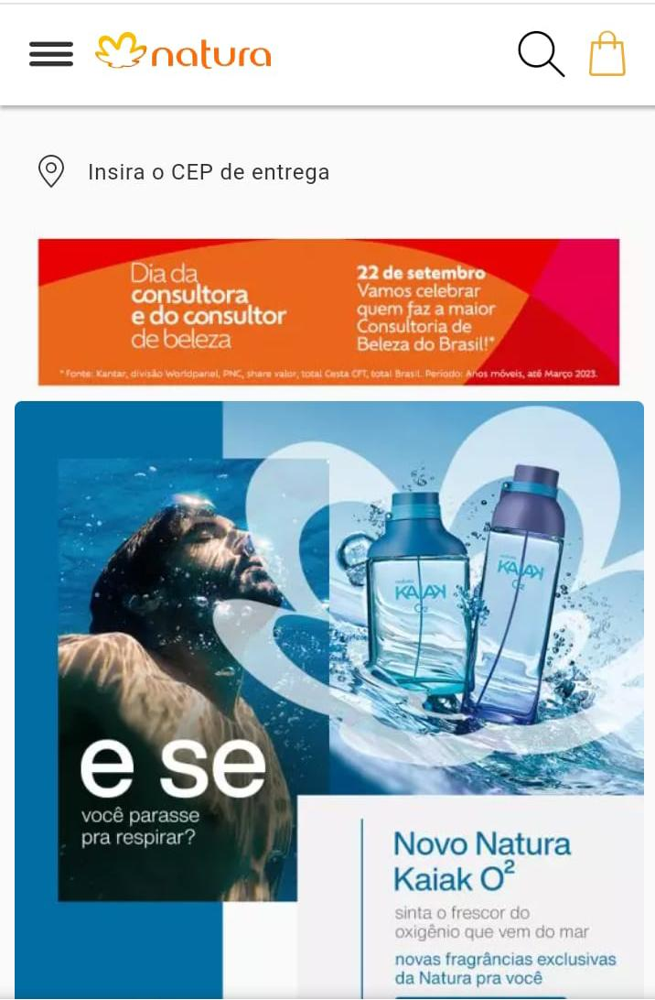
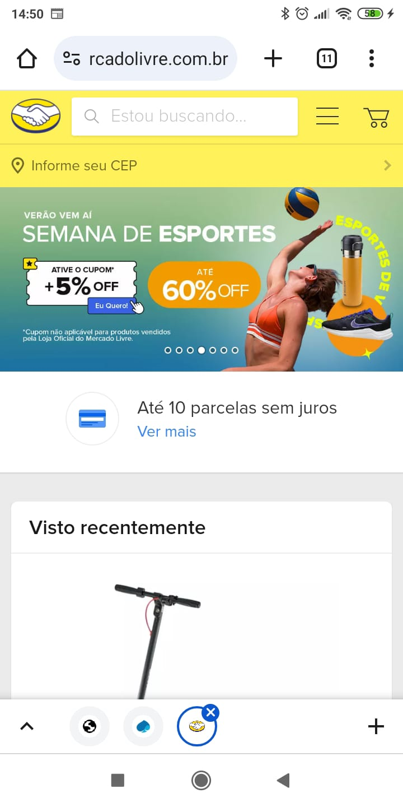

Visual Hierarchy
Natura
Natura's website Visual Hierarchy's exemples
- Highlight for products and promotions: Featured products, promotions and launches are displayed in banners or prominent visual sections on the home page, catching the visitor's attention.
- Intuitive navigation: The top navigation bar has well-defined categories, such as "Makeup", "Perfumery", "Skin Care", etc., making it easy to search for specific products.
- High-quality images: Product and model images were clear and attractive, making the site visually pleasing.
- Readable text: Typography was generally clear and readable, with product titles and descriptions prominent.
- Call to Actions: Action buttons and links, such as "Buy Now" or "Learn More", were highlighted to encourage user interaction.
PARC: Proximity
Mercado Livre
Mercado Livre's website PARC: Proximity's exemples
- You can see the grouping of payment methods side by side.
- Offers of products are also grouped based on my latest search.
- Mercado Libre has a subscription program where several discounts are offered on streaming services, and it groups them together to show all of these services and the benefits of the subscription.
PARC: Repetition
Itaú Bank
Itaú Bank's websitePARC: Repetition's exemples
- Brand Colors: Consistent use of brand colors like orange and blue is an important example of repetition. Brand colors are used for headers, action buttons, and other visual elements to create a strong, recognizable visual identity.
- Typography: Repeating typography, including fonts, text sizes, and styles (such as bold or italics), helps maintain visual consistency throughout your site. This ensures that the text is easy to read and that the brand identity is maintained.
- Button and Link Styles: Buttons and links follow a consistent style throughout the site, which includes accent colors, hover effects (effects when the mouse passes over them) and sizes. This consistency makes it easier to identify clickable elements.